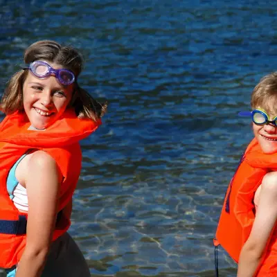
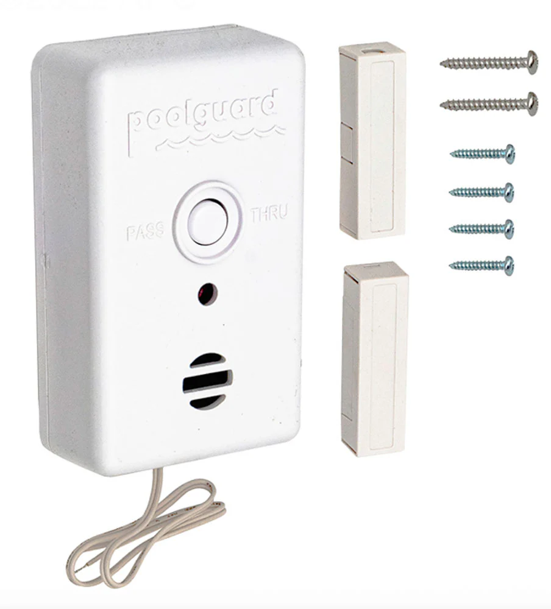

Infant Swim Lessons: When to Start & What to Expect
Early swim lessons can reduce drowning risk in children ages 1-4 by 88%. This guide covers when to start, the difference between ISR and traditional methods, what to expect during lessons, and how to find classes near you.
When Should Babies Start Swim Lessons?
The right age depends on your child's development, your goals, and the type of lessons you choose. Here's what pediatricians and swim safety organizations recommend.
- AAP recommendation (age 1): The American Academy of Pediatrics recommends swim lessons for most children starting at age 1. At this age, children have better head and neck control and can follow simple instructions.
- ISR programs (6 months+): Infant Swimming Resource programs accept babies as young as 6 months. These focus on survival skills—teaching infants to roll onto their back and float if they fall into water.
- Parent-child classes (any age): Many community pools offer parent-child "water acclimation" classes for infants as young as 6 months. These focus on comfort, not swimming skills, and always involve a parent in the water.
- Developmental readiness: Some babies aren't ready until 18-24 months. Look for signs: can they hold their head up independently, follow directions, and tolerate water on their face without extreme distress?
ISR vs. Traditional Swim Lessons
There are two main approaches to infant swim lessons. Both are effective—but they serve different goals and use very different methods.
Survival-focused
Goal: Teach infants to survive an unexpected fall into water by rolling onto their back and floating. Older toddlers learn "swim-float-swim" sequences.
Method: One-on-one lessons, 10 minutes per day, 5 days per week, for 6-8 weeks. Certified ISR instructors only.
Intensity: Can be emotionally intense. Crying during lessons is common as infants learn skills they may initially resist. ISR instructors are trained to handle this safely.
Cost: $100-$150/week for daily sessions. Private instruction only.
Water comfort & gradual progression
Goal: Build water comfort, teach basic swimming skills, and encourage a love of swimming through play and gradual skill-building.
Method: Group or semi-private lessons, 30-45 minutes, 1-2 times per week. Parent often participates with infants under 2 years.
Intensity: Gentle, playful approach. Focuses on making swimming fun. Progress is slower but less stressful for most children.
Cost: $40-$80 for a 4-week session. Offered at YMCAs, community pools, and private swim schools.
Consider your goals
Choose ISR if: You live near open water (pool, lake, canal), want survival skills as quickly as possible, and can commit to daily lessons.
Choose traditional if: Your priority is building confidence and enjoyment, you prefer a gentler pace, or you want to participate with your child.
Both are valuable: Some families do ISR first for survival skills, then transition to traditional lessons for stroke development and fun.
What to Expect at Infant Swim Lessons
Whether you choose ISR or traditional lessons, here's what the first few weeks typically look like.
10-30 minutes
ISR lessons are exactly 10 minutes—short but intense. Traditional infant lessons run 30-45 minutes and include more play. Infants have short attention spans and tire quickly, so brief sessions are safer and more effective.
Individualized attention
ISR is always one instructor, one child. Traditional infant lessons may be one-on-one, or small groups of 3-6 parent-child pairs. Smaller ratios mean more personalized feedback and faster skill development.
Especially in ISR
Many infants cry during early ISR lessons—learning to float or hold their breath can be scary at first. Certified instructors are trained to work through this safely. Traditional lessons typically involve less crying, but some fussiness is still common.
Daily or 2x/week
ISR requires 5 consecutive days per week for 6-8 weeks. Traditional lessons are usually 1-2 times per week for 4-8 weeks. Consistent attendance is critical—missing sessions delays progress and can confuse muscle memory.
Bring comfort items
Infants lose body heat quickly. Bring a dry, warm towel and wrap your baby immediately after the lesson. A favorite snack or comfort item can help them calm down and associate lessons with positive experiences.
Float, roll, and swim
In ISR, the first milestone is a back float with face out of water. Then rolling from face-down to back. Finally, swim-float-swim sequences. Traditional lessons focus on comfort, then kicking, then assisted floating and basic strokes.
How to Find Infant Swim Lessons Near You
Here's where to look for qualified instructors and affordable programs in your area.
- FloatSwim Directory: Search our database of 1,245+ swim lesson providers across all 50 states. Filter by age group, lesson type, and location. Browse the directory →
- YMCA programs: Many YMCAs offer free or low-cost swim lessons for families who qualify. Programs like "Safety Around Water" provide short-term intensive lessons at no cost. Find your local YMCA →
- ISR certified instructors: If you're interested in ISR, only work with certified instructors. Find them through the official ISR website. ISR instructor directory →
- Community pools & recreation centers: Most city-run pools offer group swim lessons for infants and toddlers. Check your local parks and recreation department website.
- Private swim schools: Chains like Goldfish Swim School, SafeSplash, and British Swim School offer infant programs. More expensive, but often have flexible schedules and heated pools.
Safety Tips for Parents
Swim lessons are a powerful drowning prevention tool—but they're not a substitute for supervision. Here's how to keep your infant safe in and around water.
Always stay within arm's reach
Even after completing swim lessons, infants cannot be left unattended in or near water. Stay within arm's reach during baths, pool time, and beach visits. One designated "water watcher" should always have eyes on children.
Swim lessons are not drown-proofing
ISR and traditional swim lessons significantly reduce drowning risk—but no child is drown-proof. Lessons are one layer of protection. Continue using fences, alarms, life jackets, and constant supervision.
Combine multiple strategies
The CDC recommends a "layers of protection" approach: supervision, barriers (fences with self-closing gates), alarms, life jackets, CPR training, and swim lessons. Use all layers—not just one. See full checklist →
Recommended Safety Gear for Families with Infants
Swim lessons are just one layer of protection. Add these safety tools to reduce risk around water.

Kids Life Jacket (USCG Approved)
Always use a Coast Guard-approved life jacket for infants and toddlers during boat rides, lake trips, and open water play. Choose the correct size by weight.
View on Amazon
Pool Door Alarm
Install alarms on all doors that lead to the pool area. Loud alerts when doors open give you critical seconds to prevent unsupervised access.
View on Amazon
Removable Pool Fence
Four-sided fencing with self-closing, self-latching gates is the most effective drowning prevention measure. Removable mesh fences are affordable and DIY-friendly.
View on AmazonFrequently Asked Questions
What age can babies start swim lessons?
The American Academy of Pediatrics (AAP) recommends starting swim lessons at age 1 or older. However, ISR (Infant Swimming Resource) programs accept infants as young as 6 months. Consult your pediatrician before enrolling infants under 12 months.
Is ISR safe?
ISR is considered safe when taught by certified instructors. The method has been used for over 50 years and emphasizes survival skills. However, it can be emotionally intense for some infants. Parents should research the approach, observe a class, and consult their pediatrician before enrolling.
How much do infant swim lessons cost?
Costs vary widely by location and program type. Traditional group lessons at community pools or YMCAs typically range from $40-$80 for a 4-week session. Private ISR lessons can cost $100-$150 per week for daily 10-minute sessions. Some YMCAs offer free or subsidized swim lessons for low-income families.
More Water Safety Resources
Pool Safety Checklist
The complete checklist every pool-owning family needs. Fences, alarms, and rules.
All Resources
Browse drowning prevention research, statistics, CPR training guides, and parent education materials.
Find Swim Lessons
Search 1,245+ swim lesson providers across all 50 states. Free and low-cost options available.
FloatSwim is a participant in the Amazon Associates Program. Some links earn a small commission at no extra cost to you.